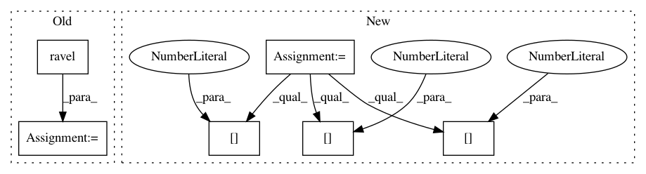

cbe17d7c0be2587b876225bdea08abbed426f17c,mlxtend/frequent_patterns/apriori.py,,apriori,#Any#Any#Any#Any#Any#,54
Before Change
allowed_val = {0, 1, True, False}
unique_val = np.unique(df.values.ravel())
for val in unique_val:
if val not in allowed_val:
s = ("The allowed values for a DataFrame"
" are True, False, 0, 1. Found value %s" % (val))
raise ValueError(s)
is_sparse = hasattr(df, "to_coo")
if is_sparse:
if not isinstance(df.columns[0], str) and df.columns[0] != 0:
raise ValueError("Due to current limitations in Pandas, "
After Change
http://rasbt.github.io/mlxtend/user_guide/frequent_patterns/apriori/
idxs = np.where((df.values != 1) & (df.values != 0))
if len(idxs[0]) > 0:
val = df.values[idxs[0][0], idxs[1][0]]
s = ("The allowed values for a DataFrame"
" are True, False, 0, 1. Found value %s" % (val))
raise ValueError(s)
In pattern: SUPERPATTERN
Frequency: 3
Non-data size: 6
Instances
Project Name: rasbt/mlxtend
Commit Name: cbe17d7c0be2587b876225bdea08abbed426f17c
Time: 2019-06-23
Author: harenbergsd@gmail.com
File Name: mlxtend/frequent_patterns/apriori.py
Class Name:
Method Name: apriori
Project Name: scikit-image/scikit-image
Commit Name: f877491f58df5667e65aff742f872625cb48df56
Time: 2016-06-07
Author: devel@sciunto.org
File Name: doc/examples/transform/plot_radon_transform.py
Class Name:
Method Name:
Project Name: scikit-image/scikit-image
Commit Name: f877491f58df5667e65aff742f872625cb48df56
Time: 2016-06-07
Author: devel@sciunto.org
File Name: doc/examples/segmentation/plot_peak_local_max.py
Class Name:
Method Name: